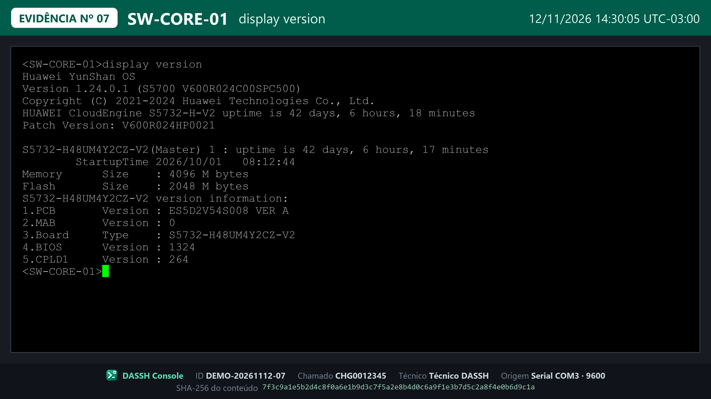

O DASSH Console é o shell profissional que une Serial, SSH, PowerShell, Cloud (Azure e Google Cloud) e iDRAC/iLO em uma só plataforma — com cofre de credenciais, sessão compartilhada com criptografia de ponta a ponta, automações por fabricante e evidências com valor de auditoria, do primeiro comando ao relatório assinado.
Windows 10 ou 11 (64 bits) · não precisa ser administrador · versão de testes
Leva menos de um minuto. Nada é enviado para fora do seu computador.
Clique em Baixar para Windows. O arquivo DASSH-Console-Setup.exe vai para a pasta Downloads.
Abra o arquivo. Se o Windows mostrar “O Windows protegeu o computador”, veja abaixo — é normal nesta fase.
O atalho DASSH Console aparece na Área de Trabalho. Escolha a conexão no topo e clique em Conectar.
Acesso, segurança, colaboração e rastreabilidade em uma única ferramenta — feita para o dia a dia de quem mantém a infraestrutura de pé.
Serial, SSH, PowerShell, CMD e Cloud (Azure e Google Cloud) em abas — várias sessões lado a lado, com cronômetro e gravação.
Senhas cifradas e protegidas pelo Windows. O login acontece em um clique — a credencial nunca aparece na tela nem na evidência.
Roteiros validados que executam a coleta, paginam até o fim e geram cada evidência sozinhos.
Ctrl+Alt+E gera a imagem padronizada, em 4K, com número, data e fuso, equipamento e hash SHA-256.
Envia a evidência para a conversa da equipe, em ordem, com fila que não perde nada.
Interfaces de gerência e console virtual (inclusive Java legado) abertos dentro do app — também com evidência.
Capa, evidências, logs originais anexados, hashes e cadeia de custódia — pronto para assinatura do engenheiro de campo e do remoto.
Especialistas acompanham ao vivo — pelo app ou direto no navegador — com aprovação individual, controle sob demanda e criptografia de ponta a ponta.
Mesmo formato em todos os atendimentos — pronta para auditoria (ISO/IEC 27037, ISO 27001).

Exemplo com dados fictícios.
▶ Acompanhar pelo navegador sem instalar
Prefere não instalar? Abra Acompanhar pelo navegador, digite o código e assista direto nesta página. Cada código abre a sua própria sessão — várias pessoas podem acompanhar a mesma sessão, e sessões diferentes nunca se misturam.
Você entra como observador. O controle do terminal só é passado com autorização. Tudo trafega cifrado de ponta a ponta (AES-256 + X25519).
O app roda no seu computador. Evidências, logs e senhas ficam com você (as senhas protegidas pelo próprio Windows). A câmera e o microfone nunca são usados. Na sessão ao vivo, só quem você aprova consegue ver.
Não. A instalação é só para o seu usuário. O app só pede permissão do Windows em ações específicas (ex.: instalar o driver do cabo console ou adicionar um IP temporário), e sempre avisa antes.
O instalador cria atalhos e o desinstalador. A portátil roda de uma pasta ou pendrive, sem instalar: descompacte e abra DASSH Console.exe.
Configurações do Windows → Aplicativos → DASSH Console → Desinstalar.
Use o botão 🩺 ao lado da porta COM: o app diagnostica o cabo e o driver e indica a correção. O 🔓 libera uma porta que ficou presa.